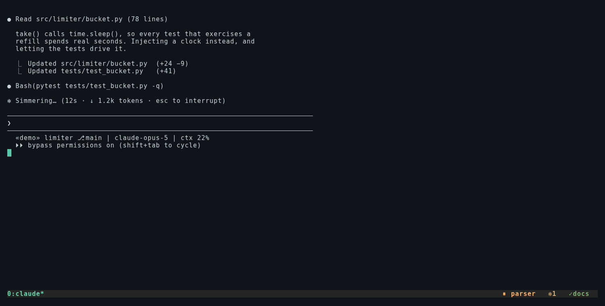

Keep the agent screen you already use. fmux adds one status line and one keystroke — nothing else to look at.
쓰던 에이전트 화면은 그대로 두고, 상태줄 한 줄과 단축키 하나만 더합니다.
One bash file. No dashboard, no app, no runtime.
bash 파일 하나예요. 대시보드도, 앱도, 런타임도 없습니다.

Running several agents usually means splitting the screen. Four agents, four panes.
에이전트를 여러 개 돌릴 때는 보통 창을 나눠서 띄워놓게 되죠. 넷을 띄우면 화면도 넷으로 쪼개집니다.
And then your eyes never settle. You keep choosing where to look, and the text keeps getting smaller. After an hour or two it is your eyes that give out first — not the machine, and not the agents.
그런데 그렇게 해놓으면 시선이 한 곳에 머물지를 못해요. 어디를 볼지 계속 고르게 되고, 글씨는 필연적으로 작아지고요. 한두 시간 지나면 기계도 에이전트도 아니고 눈이 먼저 지칩니다.
But there is only one reason to split the screen at all: you want to know which
session needs you.
fmux starts there. Keep one session full size, and let a single line at the bottom speak for the rest.
그런데 창을 나눈 이유를 따져보면 결국 하나예요. 어느 세션이 나를 기다리는지 알고
싶어서죠.
fmux 는 거기서 출발했어요. 화면은 나누지 않고 지금 보는 세션 하나를 꽉 채워 쓰고, 나머지는 하단
한 줄이 대신 말해주게 하는 겁니다.
The one that matters — it ends only when a human touches it. The status bar carries the session's name, not just a count, so you know which one to go to.
제일 중요한 상태예요. 사람이 손대야만 끝나거든요. 개수만이 아니라 세션 이름까지 상태줄에 떠서, 어디로 가야 하는지 바로 알 수 있어요.
Actually running right now. The agent's own hooks say so first, and CPU is checked before a mark is ever taken away — a badge that lies once is a badge you open anyway.
지금 실제로 돌고 있다는 뜻이에요. 에이전트가 훅으로 직접 알려주고, 마크를 뗄 때는 CPU까지 확인합니다. 한 번 틀린 배지는 결국 열어보게 되니까요.
Unread results sit at the top of the list and clear themselves the moment you visit.
안 읽은 결과가 목록 맨 위로 올라오고, 한 번 들르면 알아서 사라집니다.
A single bash file with no runtime goes wherever tmux does — including the machine your agents actually live on, which is rarely the one in front of you.
런타임 없는 bash 파일 하나라 tmux 가 도는 곳이면 어디든 올라가요. 에이전트가 실제로 사는 기계에도요. 그게 눈앞의 기계인 경우는 드무니까요.
So it is built for a box you are not sitting at. Reboot it and the fleet comes back — every session in its own directory, every agent on its own conversation. Check in from your phone and the Remote Control link is still attached, because fmux reconnects the ones that quietly drop.
그래서 내가 앞에 없는 기계를 전제로 만들었어요. 재부팅해도 함대가 돌아옵니다. 세션은 원래 디렉토리로, 에이전트는 원래 대화로요. 폰으로 열어봐도 원격 제어가 붙어 있고요. 조용히 끊기는 것들을 fmux 가 다시 붙여두거든요.
Both run off cron lines the installer prints for you — it never edits your crontab itself.
둘 다 크론으로 도는데, 그 두 줄은 설치 스크립트가 찍어주기만 해요. crontab 을 직접 고치지는 않습니다.
fmux once. After that it is one key.처음 한 번만 fmux, 그 뒤로는 한 키From a plain shell, run fmux. It lists your sessions and attaches you to the
one you pick — that is how you get in from outside tmux.
터미널에서 fmux 를 치면 세션 목록이 나오고, 고른 세션에 붙습니다.
tmux 밖에서 들어오는 길이에요.
Once you are inside, you never type it again: Shift + ↑ opens the same popup over whatever you were doing — no prefix, no chord — and previews what you last asked the session under the cursor.
일단 안에 들어오면 다시 칠 일이 없어요. Shift + ↑ 하나면 하던 화면 위로 같은 팝업이 열립니다. prefix 도, 두 번 누르는 것도 없이요. 커서가 놓인 세션에는 마지막으로 뭘 시켰는지가 같이 보이고요.
If your terminal already uses that key, fmux config set key_summon_fast
takes any other name — or leave it out entirely and use prefix + F.
터미널이 그 키를 이미 쓰고 있으면 fmux config set key_summon_fast
로 다른 키를 줄 수 있어요. 아예 안 쓰고 prefix + F 만 써도 되고요.
Ctrl + N inside the popup asks for a name and a command, then creates the tmux session and drops you in it. The agent you start there is picked up by the hooks immediately — no extra step to "register" it.
팝업 안에서 Ctrl + N 을 누르면 이름과 실행할 명령을 물어봐요. 답하면 tmux 세션이 만들어지고 바로 그 안으로 들어갑니다. 거기서 띄운 에이전트는 훅이 알아서 잡아가요. 따로 등록하는 절차는 없습니다.
Ctrl + E renames the session under the cursor. Worth doing: the name is
what the status bar shows when that session needs you, so parser tells you where to
go and bash-3 does not.
커서가 놓인 세션의 이름은 Ctrl + E 로 바꿔요. 해둘 만한 일이에요.
그 세션이 나를 부를 때 상태줄에 뜨는 게 이 이름이라, parser 는 어디로 갈지 알려주지만
bash-3 은 안 알려주거든요.
→ enters the session under the cursor. Once you are in it, the way back out is the key you came in with — Shift + ↑ works from inside a session just as well, so moving between agents is one keystroke each way.
커서가 놓인 세션에는 → 로 들어가요. 들어간 다음에 나오는 방법은 들어올 때 쓴 그 키입니다. Shift + ↑ 는 세션 안에서도 똑같이 먹어서, 에이전트 사이를 오가는 데 양쪽 다 한 타건이에요.
Close the terminal, go home, reboot the box. Open fmux tomorrow and the fleet is standing: every session in the directory it belongs to, every agent on the conversation it was having. You do not rebuild it — you find it.
터미널을 닫고, 집에 가고, 기계를 재부팅해도 괜찮아요. 다음 날 fmux 를 열면 함대가 그대로 서 있습니다. 세션은 원래 있던 디렉토리에, 에이전트는 하던 대화에요. 다시 세우는 게 아니라 찾아 들어가는 겁니다.
That last part is what makes naming worth the five seconds — a fleet you keep is a fleet you have to be able to tell apart.
이름 붙이는 5초가 여기서 값을 합니다. 계속 두고 쓰는 함대라면 서로 구별이 돼야 하니까요.
curl -fsSL https://raw.githubusercontent.com/gabury1/fleetmux/main/install.sh | bash
Or read it first, which is the reasonable thing to do with any
curl | sh — the README shows that path too. The installer checks its
dependencies, never edits your crontab, and never takes a key or a file that is already
someone else's. Requires tmux ≥ 3.2, fzf ≥ 0.64, bash. Linux and macOS; Windows via WSL2.
아니면 먼저 열어서 읽어보셔도 됩니다. 어떤 curl | sh 든 그게 더 나은 순서고,
README 에도 그 경로를 적어뒀어요. 설치 스크립트는 의존성을 먼저 확인하고, crontab 을 고치지 않고,
이미 남의 것인 키나 파일은 가져가지 않습니다. tmux 3.2 이상, fzf 0.64 이상, bash 가 필요해요.
리눅스와 macOS 를 지원하고, 윈도우는 WSL2 로 씁니다.
The agent hooks arrive through a PATH shim that only fires inside tmux. Your global Claude Code config is never touched, and deleting one file removes every trace.
에이전트 훅은 tmux 안에서만 발동하는 PATH shim 으로 주입돼요. 전역 Claude Code 설정은 건드리지 않고, 파일 하나만 지우면 흔적이 전부 사라집니다.